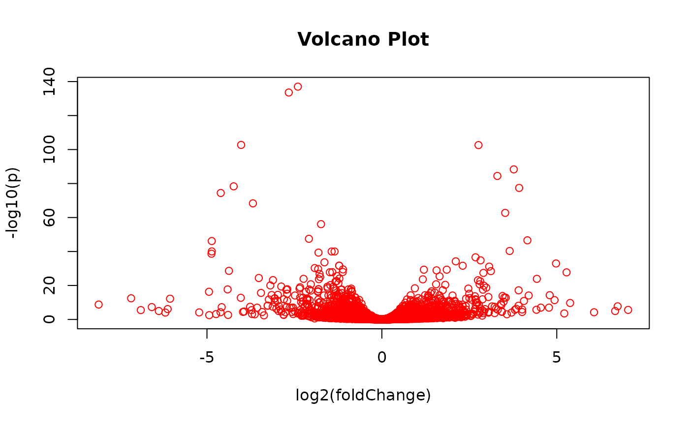
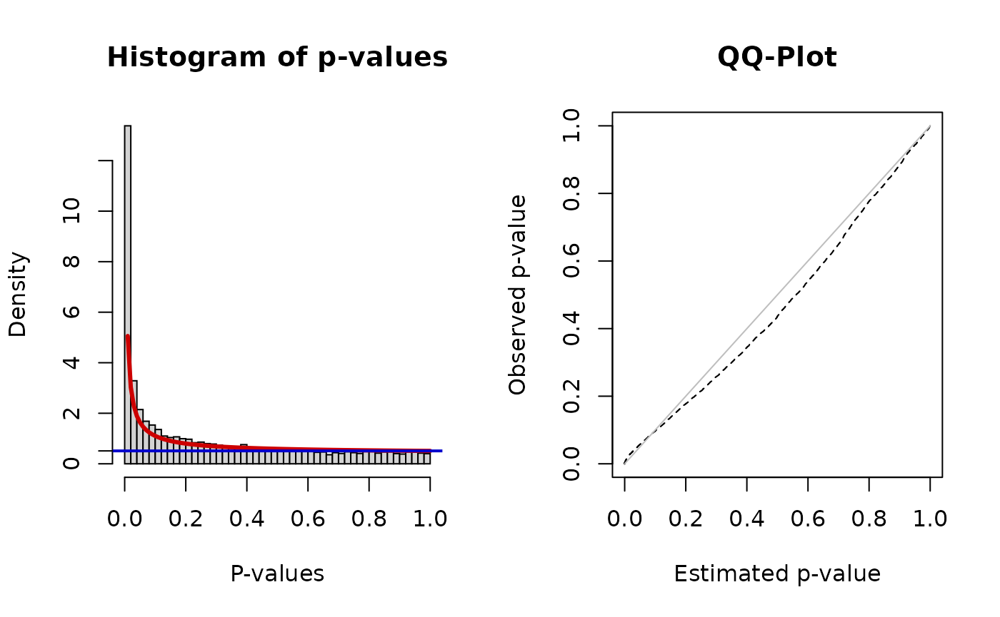

BioNet.RmdGet the latest version of the 293T PPI network:
bp.293t <- BioPlex::getBioPlex(cell.line = "293T", version = "3.0")## Using cached version from 2021-06-28 05:29:44and turn into a graph object:
bp.gr <- BioPlex::bioplex2graph(bp.293t)Get RNA-seq data for 293T cells from GEO: GSE122425
gse122425 <- BioPlex::getGSE122425()## Using cached version from 2021-06-28 05:29:55Differential expression analysis between NSUN2 knockout and wild type:
gse122425$GROUP <- rep(c(0, 1), each = 3)
gse122425 <- EnrichmentBrowser::deAna(gse122425, de.method = "DESeq2")## Excluding 38949 genes not satisfying min.cpm threshold## Corresponding software package not found: DESeq2
## Make sure that you have it installed.## 'getOption("repos")' replaces Bioconductor standard repositories, see
## '?repositories' for details
##
## replacement repositories:
## CRAN: https://packagemanager.rstudio.com/all/__linux__/focal/latest## Bioconductor version 3.13 (BiocManager 1.30.16), R 4.1.0 (2021-05-18)## Installing package(s) 'DESeq2'## also installing the dependencies 'formatR', 'lambda.r', 'futile.options', 'futile.logger', 'snow', 'BiocParallel', 'genefilter', 'geneplotter', 'RcppArmadillo'Inspect results:
rowData(gse122425)## DataFrame with 18956 rows and 8 columns
## SYMBOL KO GO length
## <character> <character> <character> <integer>
## ENSG00000227232 WASH7P K18461 _ 15444
## ENSG00000228463 AP006222.2 _ _ 39639
## ENSG00000237094 RP4-669L17.10 _ _ 136229
## ENSG00000225630 MTND2P28 K03879 _ 1044
## ENSG00000237973 hsa-mir-6723 K02256 _ 1543
## ... ... ... ... ...
## ENSG00000185973 TMLHE K00474 molecular_function:i.. 179830
## ENSG00000124333 VAMP7 K08515 biological_process:a.. 62478
## ENSG00000182484 WASH6P K18461 molecular_function:m.. 4885
## ENSG00000215414 PSMA6P1 K02730 _ 741
## ENSG00000185275 CD24P4 K06469 _ 243
## FC DESeq2.STAT PVAL ADJ.PVAL
## <numeric> <numeric> <numeric> <numeric>
## ENSG00000227232 0.171520 0.724534 0.468738 0.648277
## ENSG00000228463 0.445551 1.194110 0.232435 0.419636
## ENSG00000237094 -0.318485 -0.446073 0.655545 0.791683
## ENSG00000225630 -0.404707 -1.227372 0.219683 0.404906
## ENSG00000237973 -0.337735 -0.983072 0.325572 0.518622
## ... ... ... ... ...
## ENSG00000185973 0.111457 0.861636 3.88888e-01 5.79293e-01
## ENSG00000124333 3.430248 4.951910 7.34886e-07 2.15608e-05
## ENSG00000182484 -0.247212 -0.398845 6.90007e-01 8.17000e-01
## ENSG00000215414 0.543926 0.991335 3.21522e-01 5.14536e-01
## ENSG00000185275 0.452405 1.596938 1.10280e-01 2.59482e-01
not.na <- !is.na(rowData(gse122425)$PVAL)
gse122425 <- gse122425[not.na,]
EnrichmentBrowser::volcano(rowData(gse122425)$FC, rowData(gse122425)$ADJ.PVAL)
Change rownames to gene symbols for intersection with bioplex graph:
Intersect bioplex graph and expression dataset:
syms <- graph::nodeData(bp.gr, graph::nodes(bp.gr), "SYMBOL")
syms <- unlist(syms)
isect <- intersect(syms, rownames(gse122425))
ind <- match(isect, syms)
bp.sgr <- graph::subGraph(names(syms)[ind], bp.gr)
bp.sgr ## A graphNEL graph with directed edges
## Number of Nodes = 11015
## Number of Edges = 79341
bp.sgr <- BioNet::rmSelfLoops(bp.sgr)
bp.sgr## A graphNEL graph with directed edges
## Number of Nodes = 11015
## Number of Edges = 79341Get the DE p-values for each node:
syms <- syms[ind]
ind <- match(isect, rownames(gse122425))
pvals <- rowData(gse122425)[ind, "PVAL"]
names(pvals) <- names(syms)
head(pvals)## P00813 Q8N7W2 Q6ZMN8 P55039 Q9NZL4 Q6ICG6
## 0.57137317 0.05761896 0.04112662 0.22823806 0.84595685 0.38653260To score each node of the network we fit a Beta-uniform mixture model (BUM) to the p-value distribution and subsequently use the parameters of the model for the scoring function:
fb <- BioNet::fitBumModel(pvals)
scores <- BioNet::scoreNodes(bp.sgr, fb, fdr = 0.05)
head(scores)## P00813 Q8N7W2 Q6ZMN8 P55039 Q9NZL4 Q6ICG6
## -2.3408846 -0.4505579 -0.1727211 -1.5847729 -2.6642287 -2.0188585
summary(scores)## Min. 1st Qu. Median Mean 3rd Qu. Max.
## -2.8019 -2.1898 -1.2382 0.3586 0.6252 265.2463Here we use a fast heuristic approach to calculate an approximation to theoptimal scoring subnetwork.
An optimal solution can be calculated using the heinz algorithm requiring a commercial CPLEX license.
Note: this will run for a couple of minutes so it will be a good idea to cache the result to not recompute this over and over again.
module <- BioNet::runFastHeinz(bp.sgr, scores)
module## A graphNEL graph with directed edges
## Number of Nodes = 2851
## Number of Edges = 8524For some reason BioNet::runFastHeinz drops the edgeData of the input graph, so we need to re-annotate those to the module. There doesn’t seem to be a convenient way to bulk transfer edgeData from one graph to another, but rather only for one edge and one attribute at a time.
With a little abuse, we help ourselves via accessing slots directly.
en <- names(edgeData(module))
edgeDataDefaults(module) <- edgeDataDefaults(bp.sgr)
module@edgeData@data[en] <- edgeData(bp.sgr)[en]
kegg.gs <- EnrichmentBrowser::getGenesets(org = "hsa", db = "kegg", gene.id.type = "UNIPROT")
head(kegg.gs)## $`hsa00010_Glycolysis_/_Gluconeogenesis`
## [1] "A0A024QZ64" "A0A024R0Y5" "A0A024R145" "A0A024R5D8" "A0A024R713"
## [6] "A0A024R782" "A0A024R7R1" "A0A024RBX9" "A0A0A0MS74" "A0A0K0K1K1"
## [11] "A0A140VJM9" "A0A140VJR3" "A0A140VKA7" "A8K7J7" "B3KT70"
## [16] "B7Z6C2" "B7Z9E5" "B9EKV4" "J3KNX1" "O00757"
## [21] "P00325" "P00326" "P00338" "P00558" "P04075"
## [26] "P04406" "P05091" "P06733" "P06744" "P07195"
## [31] "P07327" "P08319" "P09104" "P09467" "P10515"
## [36] "P11177" "P11766" "P13929" "P14550" "P14618"
## [41] "P15259" "P17858" "P28332" "P29803" "P30613"
## [46] "P30837" "P30838" "P35557" "P35558" "P35575"
## [51] "P40394" "P49419" "P51648" "P52789" "P60174"
## [56] "Q01813" "Q6ZMR3" "Q8N0Y7" "Q96C23" "Q96FY7"
## [61] "Q96G03" "Q9BRR6" "Q9BUM1" "Q9NQR9" "Q9NUB1"
## [66] "Q9UNW1"
##
## $`hsa00020_Citrate_cycle_(TCA_cycle)`
## [1] "A0A024R1T9" "A0A024R5C5" "A0A024R713" "A0A024RB75" "A0A024RBX9"
## [6] "A0A087X2E5" "A0A0A0MS74" "A0A0S2Z4C3" "A0A0S2Z4H7" "A0A140VJQ5"
## [11] "B3KTM1" "B7Z6J1" "E5KS60" "O75874" "P10515"
## [16] "P11177" "P21399" "P21912" "P29803" "P31040"
## [21] "P35558" "P40925" "P48735" "P50213" "P51553"
## [26] "P53597" "Q96I99" "Q99643" "Q99798" "Q9ULD0"
##
## $hsa00030_Pentose_phosphate_pathway
## [1] "A0A024QZ64" "A0A024R0Y5" "A0A024R145" "A0A0K0K1K7" "A0A140VK41"
## [6] "A0A140VK56" "A0A140VKC2" "B4E2U0" "B7Z6C2" "B7Z7I0"
## [11] "B7ZB02" "E9PPM8" "O00757" "P04075" "P06744"
## [16] "P09467" "P11413" "P17858" "P21108" "P29401"
## [21] "P49247" "Q01813" "Q15493" "Q2QD12" "Q5T6J7"
## [26] "Q8IVS8" "Q96AT9" "Q96G03" "Q9H477" "R4GMU1"
##
## $hsa00040_Pentose_and_glucuronate_interconversions
## [1] "A0A024R7A8" "A0A140T9Z0" "A0A140VJM1" "A0A140VKE1" "O60218"
## [6] "O60656" "O60701" "O75191" "O75310" "O75795"
## [11] "P06133" "P08236" "P14550" "P16662" "P19224"
## [16] "P22309" "P22310" "P35503" "P35504" "P36537"
## [21] "P54855" "Q00796" "Q2QD12" "Q5DSZ6" "Q5DSZ7"
## [26] "Q5DT02" "Q6UWM9" "Q7Z4W1" "Q96AT9" "Q9BY64"
## [31] "Q9UEF7" "Q9UQ10" "Q9Y2S2" "Q9Y4X1"
##
## $hsa00051_Fructose_and_mannose_metabolism
## [1] "A0A024QZ64" "A0A024R0Y5" "A0A024R145" "A0A024R1U5" "A0A024R482"
## [6] "A0A024R7A8" "A0A024R7R1" "A0A0S2Z4J6" "A0A140VJH7" "A0A140VJM6"
## [11] "A8K7J7" "B3KT70" "B7Z8A0" "H3BPP3" "I1Z9G4"
## [16] "O00757" "O14772" "O60218" "O60547" "O60825"
## [21] "P04075" "P09467" "P17858" "P52789" "P60174"
## [26] "Q00796" "Q01813" "Q13630" "Q16877" "Q7L5Y1"
## [31] "Q8N0W3" "Q9NQ88" "Q9Y5P6"
##
## $hsa00052_Galactose_metabolism
## [1] "A0A024R0Y5" "A0A024R7A8" "A0A024R7R1" "A0A080YV01" "A0A0S2Z3Y7"
## [6] "A0A140VKE1" "A8K7J7" "B3KT70" "B7Z6C2" "H3BN99"
## [11] "O43451" "O60218" "O60909" "P06280" "P09848"
## [16] "P10253" "P14410" "P15291" "P16278" "P17858"
## [21] "P35557" "P35575" "P51570" "P52789" "Q01813"
## [26] "Q14376" "Q2M2H8" "Q96C23" "Q96G03" "Q9BUM1"
## [31] "Q9NQR9"
go.gs <- EnrichmentBrowser::getGenesets(org = "hsa", db = "go", gene.id.type = "UNIPROT")##
head(go.gs)## $`GO:0000002_mitochondrial_genome_maintenance`
## [1] "A0A0S2Z3H3" "A0A0S2Z3Z9" "A0A0S2Z417" "B2RBL3" "O60313"
## [6] "P36776" "Q96CQ1" "Q9BQP7" "Q9BSK2" "Q9H611"
## [11] "Q9Y243"
##
## $`GO:0000003_reproduction`
## [1] "O43555" "O75900" "P01148" "Q5TKA1"
##
## $`GO:0000012_single_strand_break_repair`
## [1] "A0A024R6L5" "A0A024RE06" "A8K128" "B2RCY5" "P09430"
## [6] "Q03468" "Q13216" "Q7Z2E3" "Q8IW19"
##
## $`GO:0000017_alpha-glucoside_transport`
## [1] "P13866" "P31639"
##
## $`GO:0000018_regulation_of_DNA_recombination`
## [1] "E9PB61" "P16871" "P52292" "P52294" "Q96FV9" "Q9H4L7"
##
## $`GO:0000019_regulation_of_mitotic_recombination`
## [1] "A5D6Y3" "F8W7U8"Given the maximum scoring subnetwork and gene sets of interest, we can now throw all kinds of set-based enrichment analysis (sbea) methods or network-based enrichment analysis (nbea) methods onto the problem.
EnrichmentBrowser::sbeaMethods()## [1] "ora" "safe" "gsea" "gsa" "padog"
## [6] "globaltest" "roast" "camera" "gsva" "samgs"
## [11] "ebm" "mgsa"
EnrichmentBrowser::nbeaMethods()## [1] "ggea" "spia" "pathnet" "degraph" "ganpa"
## [6] "cepa" "topologygsa" "netgsa" "neat"Those are conveniently wrapped in the EnrichmentBrowser package and we are going to try out a couple of them here.
But for now we just take some information from the paper to illustrate the concept:
NSUN2 is a nucleolus RNA m5C methyltransferase, regulator of cell proliferation and cell differentiation, dysfunction associated with intellectual diseases and cancer; reported to be a downstream target gene of MYC oncogene, a master regulator of cell proliferation.
Among the pathways showing enrichment in the paper is Ribosome, so as showcase let’s extract nodes participating in the gene set “Ribosome” from the maximum scoring subnetwork.
ind <- grep("Ribosome$", names(kegg.gs))
ribo <- kegg.gs[[ind]]
ribo <- intersect(ribo, graph::nodes(module))
ribo.gr <- graph::subGraph(ribo, module)
ribo.gr## A graphNEL graph with directed edges
## Number of Nodes = 26
## Number of Edges = 54Such a gene set induced sub-graph can then further explored in our BioPlex node data and edge data shiny viewer.
For that we might be interested in mapping all kind of additional data onto the nodes and the edges of the network.
For example, we might want to add the Bioplex proteome data onto the graph for inspection via the shiny graph viewer.
bp.prot <- BioPlex::getBioplexProteome()## Using cached version from 2021-06-28 05:52:51
bp.prot## class: SummarizedExperiment
## dim: 9604 10
## metadata(0):
## assays(1): exprs
## rownames(9604): P0CG40 Q8IXZ3-4 ... Q9H3S5 Q8WYQ3
## rowData names(5): ENTREZID SYMBOL nr.peptides log2ratio adj.pvalue
## colnames(10): HCT1 HCT2 ... HEK4 HEK5
## colData names(1): cell.line
ribo.gr <- BioPlex::mapSummarizedExperimentOntoGraph(ribo.gr, bp.prot,
col.names = grep("HEK", colnames(bp.prot), value = TRUE),
rowdata.cols = c("nr.peptides", "log2ratio", "adj.pvalue"),
prefix = "bpprot_")
head(graph::nodeData(ribo.gr), n = 2)## $O75394
## $O75394$ENTREZID
## [1] "9553"
##
## $O75394$SYMBOL
## [1] "MRPL33"
##
## $O75394$ISOFORM
## [1] "O75394"
##
## $O75394$score
## [1] 0.2549766
##
## $O75394$bpprot_HEK1
## [1] 8.66958
##
## $O75394$bpprot_HEK2
## [1] 8.36718
##
## $O75394$bpprot_HEK3
## [1] 8.53282
##
## $O75394$bpprot_HEK4
## [1] 8.6171
##
## $O75394$bpprot_HEK5
## [1] 8.591
##
## $O75394$bpprot_nr.peptides
## [1] 2
##
## $O75394$bpprot_log2ratio
## [1] 0.4197192
##
## $O75394$bpprot_adj.pvalue
## [1] 1.13845e-05
##
##
## $P18124
## $P18124$ENTREZID
## [1] "6129"
##
## $P18124$SYMBOL
## [1] "RPL7"
##
## $P18124$ISOFORM
## [1] "P18124"
##
## $P18124$score
## [1] 0.4136696
##
## $P18124$bpprot_HEK1
## [1] 7.7563
##
## $P18124$bpprot_HEK2
## [1] 6.93534
##
## $P18124$bpprot_HEK3
## [1] 7.17503
##
## $P18124$bpprot_HEK4
## [1] 7.73146
##
## $P18124$bpprot_HEK5
## [1] 6.7052
##
## $P18124$bpprot_nr.peptides
## [1] 4
##
## $P18124$bpprot_log2ratio
## [1] 0.8111145
##
## $P18124$bpprot_adj.pvalue
## [1] 4.2201e-06## R version 4.1.0 (2021-05-18)
## Platform: x86_64-pc-linux-gnu (64-bit)
## Running under: Ubuntu 20.04.2 LTS
##
## Matrix products: default
## BLAS/LAPACK: /usr/lib/x86_64-linux-gnu/openblas-pthread/libopenblasp-r0.3.8.so
##
## locale:
## [1] LC_CTYPE=en_US.UTF-8 LC_NUMERIC=C
## [3] LC_TIME=en_US.UTF-8 LC_COLLATE=en_US.UTF-8
## [5] LC_MONETARY=en_US.UTF-8 LC_MESSAGES=C
## [7] LC_PAPER=en_US.UTF-8 LC_NAME=C
## [9] LC_ADDRESS=C LC_TELEPHONE=C
## [11] LC_MEASUREMENT=en_US.UTF-8 LC_IDENTIFICATION=C
##
## attached base packages:
## [1] parallel stats4 stats graphics grDevices utils datasets
## [8] methods base
##
## other attached packages:
## [1] org.Hs.eg.db_3.13.0 AnnotationDbi_1.54.1
## [3] DESeq2_1.32.0 EnrichmentBrowser_2.22.0
## [5] BioNet_1.52.0 RBGL_1.68.0
## [7] graph_1.70.0 BioPlex_0.99.1
## [9] SummarizedExperiment_1.22.0 Biobase_2.52.0
## [11] GenomicRanges_1.44.0 GenomeInfoDb_1.28.0
## [13] IRanges_2.26.0 S4Vectors_0.30.0
## [15] BiocGenerics_0.38.0 MatrixGenerics_1.4.0
## [17] matrixStats_0.59.0
##
## loaded via a namespace (and not attached):
## [1] bitops_1.0-7 fs_1.5.0 bit64_4.0.5
## [4] RColorBrewer_1.1-2 filelock_1.0.2 httr_1.4.2
## [7] rprojroot_2.0.2 Rgraphviz_2.36.0 tools_4.1.0
## [10] bslib_0.2.5.1 utf8_1.2.1 R6_2.5.0
## [13] colorspace_2.0-2 DBI_1.1.1 withr_2.4.2
## [16] tidyselect_1.1.1 bit_4.0.4 curl_4.3.2
## [19] compiler_4.1.0 textshaping_0.3.5 desc_1.3.0
## [22] DelayedArray_0.18.0 sass_0.4.0 scales_1.1.1
## [25] KEGGgraph_1.52.0 genefilter_1.74.0 rappdirs_0.3.3
## [28] pkgdown_1.6.1 systemfonts_1.0.2 stringr_1.4.0
## [31] digest_0.6.27 rmarkdown_2.9 XVector_0.32.0
## [34] pkgconfig_2.0.3 htmltools_0.5.1.1 highr_0.9
## [37] dbplyr_2.1.1 fastmap_1.1.0 limma_3.48.1
## [40] rlang_0.4.11 RSQLite_2.2.7 jquerylib_0.1.4
## [43] generics_0.1.0 jsonlite_1.7.2 BiocParallel_1.26.0
## [46] dplyr_1.0.7 RCurl_1.98-1.3 magrittr_2.0.1
## [49] GO.db_3.13.0 GenomeInfoDbData_1.2.6 Matrix_1.3-3
## [52] munsell_0.5.0 Rcpp_1.0.6 fansi_0.5.0
## [55] lifecycle_1.0.0 stringi_1.6.2 yaml_2.2.1
## [58] edgeR_3.34.0 zlibbioc_1.38.0 BiocFileCache_2.0.0
## [61] grid_4.1.0 blob_1.2.1 crayon_1.4.1
## [64] lattice_0.20-44 splines_4.1.0 Biostrings_2.60.1
## [67] annotate_1.70.0 KEGGREST_1.32.0 locfit_1.5-9.4
## [70] knitr_1.33 pillar_1.6.1 igraph_1.2.6
## [73] geneplotter_1.70.0 XML_3.99-0.6 glue_1.4.2
## [76] evaluate_0.14 BiocManager_1.30.16 png_0.1-7
## [79] vctrs_0.3.8 gtable_0.3.0 purrr_0.3.4
## [82] assertthat_0.2.1 ggplot2_3.3.4 cachem_1.0.5
## [85] xfun_0.24 xtable_1.8-4 survival_3.2-11
## [88] ragg_1.1.3 tibble_3.1.2 memoise_2.0.0
## [91] ellipsis_0.3.2 GSEABase_1.54.0